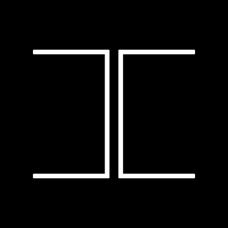

ALIGN 家族
The ALIGN family
把東西對齊。
Lining things up.
小高做的三個 App，處理的都是同一件事：排版時對齊每一頁、重拍時對齊上一張、監看時對齊構圖。
Three apps by Armin Kao that all deal with one thing: aligning pages when you lay out, aligning with the last photo when you reshoot, and aligning the frame while you monitor.

ALIGNED
Instagram 多頁輪播排版。整組輪播是一條連續畫布，跨頁編排、匯出自動切片。
A layout tool for Instagram carousels. The whole carousel is one continuous canvas, sliced automatically on export.
Mac／Windows（免費開源）・iPhone／iPad
Mac / Windows (free, open source) · iPhone / iPad

ALIGNCAM
對齊的相機。上一張半透明疊在取景上，對準了再拍；也能把一批照片串成定格影片。
A camera for lining up. The last photo sits semi-transparent over the viewfinder so you can match it, and a batch of shots becomes a flipbook clip.
iPhone（免費）
iPhone (free)

ALIGNVIEW
外接相機監看。iPad／Mac 接相機看畫面，疊上參考線與上一場的構圖，訪談時同步出逐字稿。
A monitor for an external camera. Connect a camera to iPad or Mac, overlay guides and a reference shot, and get a live transcript during interviews.
iPad／Mac・iPhone 透過 WiFi 收看
iPad / Mac · iPhone over Wi-Fi
None of the apps need an account. Your data stays on your device.